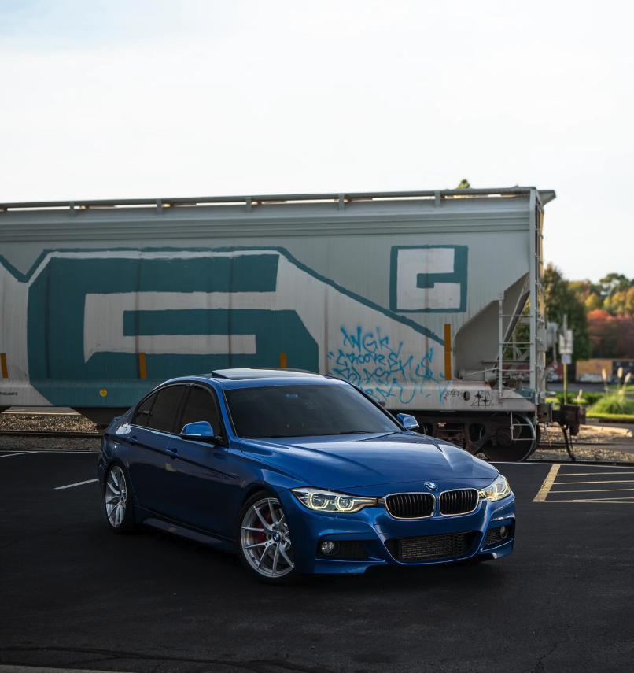

Overall content reach
250M+ Total views across client work and owned platformsSocial strategist · Creator · Editor
500K views.
30 days.
Let's build for it.
I build social content for products, brands, and communities in the real world and online. One creative partner handles strategy, scripting, production, editing, publishing support, and performance analysis so your content moves faster, stays consistent, and is built to grow attention, trust, and sales.
Strategy✦Filming✦Photography✦Scripting✦Editing✦Publishing✦Analytics✦
✦✦✦✦✦✦✦
01 / RESULTS
Numbers that
earn attention.
Selected performance across short form platforms. Every result starts with the same system: a clear idea, an immediate hook, clean packaging, and constant iteration.
Annual post views
14.8M TikTok · 365 daysAnnual video views
10.98M YouTube · 365 daysSix standout posts
12.2M Instagram · combinedAudience response
1M+ Likes in one year02 / PROVEN WORK
Trusted to build
what performs.
Client work, nonprofit storytelling, expansion across brands, and an owned audience. Different projects, one repeatable ability to turn strong ideas into content people act on.

01
Active client
Automotive gaming media
ForzaLabs
Content creator · Editor · HostI lead short form production from research and scripting through voiceover, gameplay capture, editing, graphics, and performance iteration.
267+videos created
50M+brand views during tenure
13+weekly deliverables
“World class Forza editor.” Client feedback
02
Expanded role
Basketball gaming media
NBA2KLab
Content strategy · DesignI pitched and developed a data focused post format for a second brand, adapting the same audience focused thinking beyond automotive content.
100K+first test post
100K+second test post
2 to 3posts requested weekly
“The people love the BP.” Client feedback
03
Owned media
Creator brand across platforms
BU Forza
Founder · Creator · StrategistI built and operate an automotive gaming audience across multiple platforms, owning the entire content system from idea generation to community growth.
71K+TikTok followers
13.2KInstagram followers
7.4K+YouTube subscribers
04
Not for profit
Student engineering team
Baja SAE
Social media · Photography · Creative supportI support the team with real world photography, social content, and visual storytelling designed to build campus awareness and create stronger opportunities with recruits, supporters, and sponsors.
Photobuild and event coverage
Socialteam storytelling
Reachsponsor visibility
03 / SELECTED WORK
Proof, post
by post.
Instagram / Standout post
2.94M views
- 171K likes
- 41K shares
- 5.7K saves
- 658 follows
TikTok / Annual growth
14.8M views
- 1M likes
- 118.1K profile views
- 30.8K shares
YouTube / Annual reach
10.98M views
- Consistent daily reach
- Peak above 120K
- Full annual view
Instagram / Repeatability
6.8M views
- 3 separate posts
- 135K+ likes
- 12 to 15s avg. watch time
TikTok / 90 day sprint
4.1M views
- 251K likes
- 33.7K profile views
- +43% growth
Instagram / More wins
2.48M views
- 38.5K likes
- 806K peak reach
- 3.5K saves
04 / THE SYSTEM
More than
just editing.
I handle the thinking before the timeline and the learning after the upload. That complete process turns isolated hits into repeatable formats.
- 01
Find the angle
Research the audience, identify the useful or surprising idea, and define the reason to keep watching.
- 02
Build the story
Write the hook and structure, capture the footage, and edit every beat for clarity and retention.
- 03
Package the post
Design clear on screen visuals, covers, and captions that make the value obvious before the first second.
- 04
Read the signal
Study views, watch time, shares, saves, and comments, then turn the strongest signals into the next idea.
What the complete system is built to deliver
01 More qualified attention
02 Faster, consistent output
03 Stronger brand trust
04 More leads and sales
05 / PACKAGES
Choose your level
of support.
From polished edits to a complete content system, each package is designed around a different stage of growth.
01 / Editing supportMonthly
Editing
Essentials
For brands that already have a strategy and footage but need consistent, high quality execution.
- 8 short form edits each month
- Captions, pacing and sound design
- Formatting for Instagram, TikTok and YouTube Shorts
- One revision round per video
- Client provides concepts and raw footage
02 / Strategy and creationMost popular
Content Growth
System
For brands ready to replace inconsistent posting with a repeatable content engine built for growth.
- 12 short form videos each month
- Monthly content plan and idea bank
- Hooks, scripts, editing and cover design
- Versions adapted for each platform
- Monthly performance review
- Two revision rounds per video
03 / Complete partnershipCustom
Full Content
Partner
For brands that want one creative partner to guide the strategy and execute the complete content process.
- 16 or more content pieces each month
- Ongoing strategy and audience research
- Scripting, editing and custom graphics
- Content calendar and publishing support
- Weekly performance iteration
- Priority communication and turnaround
Pricing is quoted based on content volume, source materials and turnaround. One time projects and custom scopes are also available.
06 / ABOUT
01 / Think
strategist
I find the audience insight, angle, hook, and repeatable format behind the content.
02 / Make
creator
I turn that thinking into scripts, footage, edits, graphics, posts, and measurable results.
A creator with an engineer's approach to growth.
I'm a Chemical Engineering student at Stevens Institute of Technology and a multidisciplinary social media creator. I work across industries, whether the story happens in front of a camera, inside a game, around a product, or within a community.
Working through one person keeps strategy and execution connected. Ideas move into production faster, the brand stays consistent, and every result feeds the next decision instead of getting lost between separate teams.
Started at 14
A personal page became a working content laboratory.
At 14, I started the project that became BU Forza. Since 2024, I have operated it as the brand it is today, using every post to study audience behavior, test new formats, and learn what turns a view into a follow, share, save, or click.
That analytics driven process grew an audience across TikTok, Instagram, and YouTube, then opened the door to paid work with ForzaLabs and NBA2KLab. The same system has now contributed to more than 250 million views across owned and client content.
92K+owned audience across platforms
3active social platforms
250M+views across owned and client work
ForzaLabsContent creator & editor2026 to present
BU ForzaFounder & creator2024 to present
Baja SAESocial media & creative support · Not for profit2026 to present
07 / CONTACT
Let's make the
next scroll stopper.
Available for complete social media support, including strategy, filming, photography, scripting, editing, publishing, analytics, and ongoing creative direction.
benumbrinobusiness@gmail.com